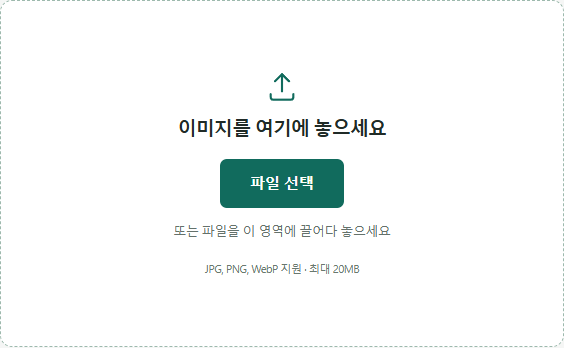

IMAGE TOOLBOX / GUIDE
아이폰 HEIC 사진, 왜 안 열릴까
아이폰 기본 사진 형식이 다른 곳에서 안 열리는 이유와, 두 가지 해결 방법을 정리했습니다.
HEIC가 뭐길래 안 열릴까
아이폰은 iOS 11부터 사진을 기본적으로 HEIC(고효율 이미지 포맷)로 저장합니다. 같은 화질에서 JPG보다 용량이 훨씬 작다는 장점이 있지만, 비교적 최신 형식이라 일부 구형 프로그램이나 안드로이드 기기, 웹사이트에서는 열리지 않을 수 있습니다.
이 사이트의 이미지 압축 도구도 마찬가지입니다. 업로드 창이 JPG, PNG, WebP 파일만 받도록 되어 있어서, HEIC 파일을 그대로 올리면 선택되지 않습니다. HEIC를 직접 변환해주는 기능은 이 사이트에 없습니다.

해결 방법 1: 앞으로 찍을 사진을 자동으로 JPG로 저장하기
아이폰 설정 → 카메라 → 포맷으로 들어가서 '높은 효율성' 대신 '호환성 우선'을 선택하면, 그 이후로 찍는 사진이 HEIC 대신 JPG로 저장됩니다. 다만 이 설정은 앞으로 찍을 사진에만 적용되고, 이미 저장돼 있는 HEIC 사진은 그대로 남습니다.
해결 방법 2: 이미 찍어둔 HEIC 사진 변환하기
이미 찍어둔 HEIC 사진은 아이폰의 공유 기능(에어드롭, 메일, 메신저 등)으로 다른 기기나 앱에 전달하면 대부분 자동으로 JPG로 바뀌어 전달됩니다. 다만 어떤 형식으로 전달되는지는 사용하는 앱과 설정에 따라 달라질 수 있어서, 확실하게 바꾸려면 별도의 HEIC 변환 프로그램이나 앱을 쓰는 것이 안전합니다. 이 사이트는 HEIC 파일 자체를 읽어서 변환하는 기능은 제공하지 않습니다.
에어드롭으로 다른 아이폰이나 맥에 보낼 때는 HEIC 그대로 전달되는 경우가 많습니다(받는 기기도 애플 제품이라 문제없이 열리기 때문입니다). 반면 카카오톡으로 사진을 보내면 카카오톡이 자동으로 JPG로 변환해서 전송하는 경우가 대부분이라, 굳이 별도 변환 없이도 카카오톡을 거치면 JPG로 바뀝니다.
JPG/PNG로 바뀐 뒤에는
일단 JPG나 PNG로 바뀌고 나면, 이미지 압축 도구에 업로드해서 품질을 조절하거나 가로세로 크기를 줄여 용량을 더 아낄 수 있습니다.
자주 묻는 질문
이 사이트에서 HEIC 파일을 바로 압축할 수 있나요?
아니요. 이미지 압축 도구는 JPG, PNG, WebP 파일만 받습니다. HEIC 파일은 먼저 JPG나 PNG로 변환한 뒤 업로드해야 합니다.
호환성 우선으로 바꾸면 사진 화질이 나빠지나요?
화질 자체가 나빠지는 것은 아닙니다. 다만 같은 화질을 유지하기 위해 JPG 파일의 용량이 HEIC보다 커지는 경향이 있어서, 저장 공간을 더 많이 씁니다.
안드로이드 기기로 보내면 왜 안 열리나요?
일부 구형 안드로이드 기기나 프로그램은 아직 HEIC 형식을 지원하지 않습니다. 이런 경우 아이폰에서 사진을 보내기 전에 호환성 우선 설정으로 바꾸거나, 이미 찍은 사진은 변환 앱을 거쳐서 보내는 것이 안전합니다.
아이클라우드에 저장된 사진도 HEIC인가요?
아이클라우드닷컴에서 사진을 내려받을 때는 '원본 그대로', '최고 해상도(HEIC)', '가장 호환 가능(JPEG)' 중에서 고를 수 있습니다. '가장 호환 가능'을 선택하면 변환 과정 없이 바로 JPEG로 받을 수 있습니다.
맥으로 옮기면 바로 열리나요?
네. HEIC는 애플이 만든 형식이라 맥에서는 파일을 우클릭해 '미리보기로 열기'를 선택하거나 사진 앱으로 가져오면 별도 변환 없이 바로 열립니다.
변환하면 원본 위치나 촬영 정보(메타데이터)가 사라지나요?
사용하는 변환 방법에 따라 다릅니다. 아이폰의 공유 기능을 거치는 경우 대부분 촬영 날짜 등 기본 정보는 유지되지만, 일부 변환 앱은 메타데이터를 유지하지 않을 수 있어 중요한 사진이라면 변환 후 정보가 남아있는지 확인하는 것이 안전합니다.